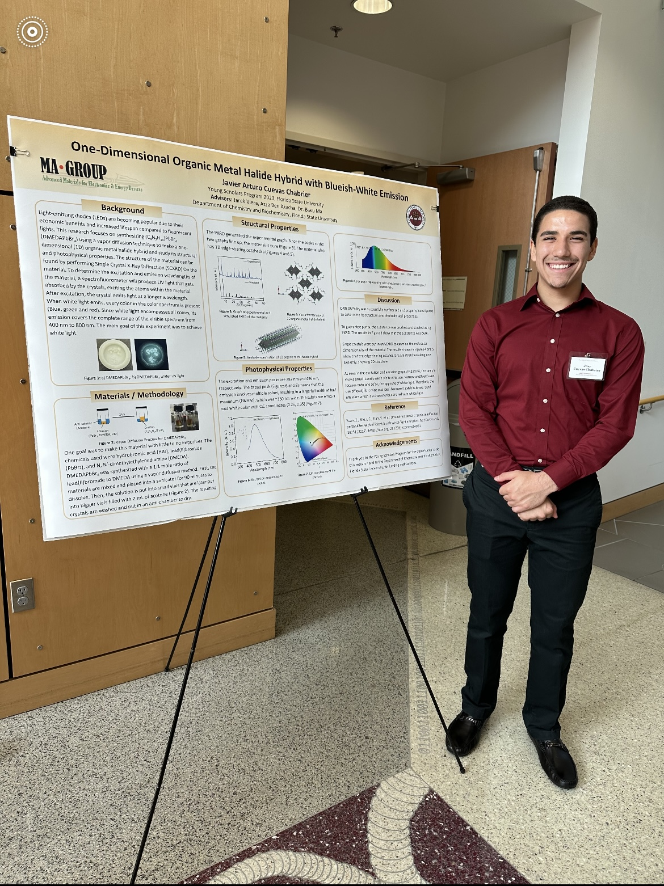
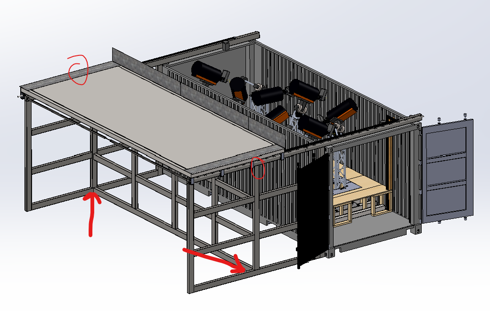
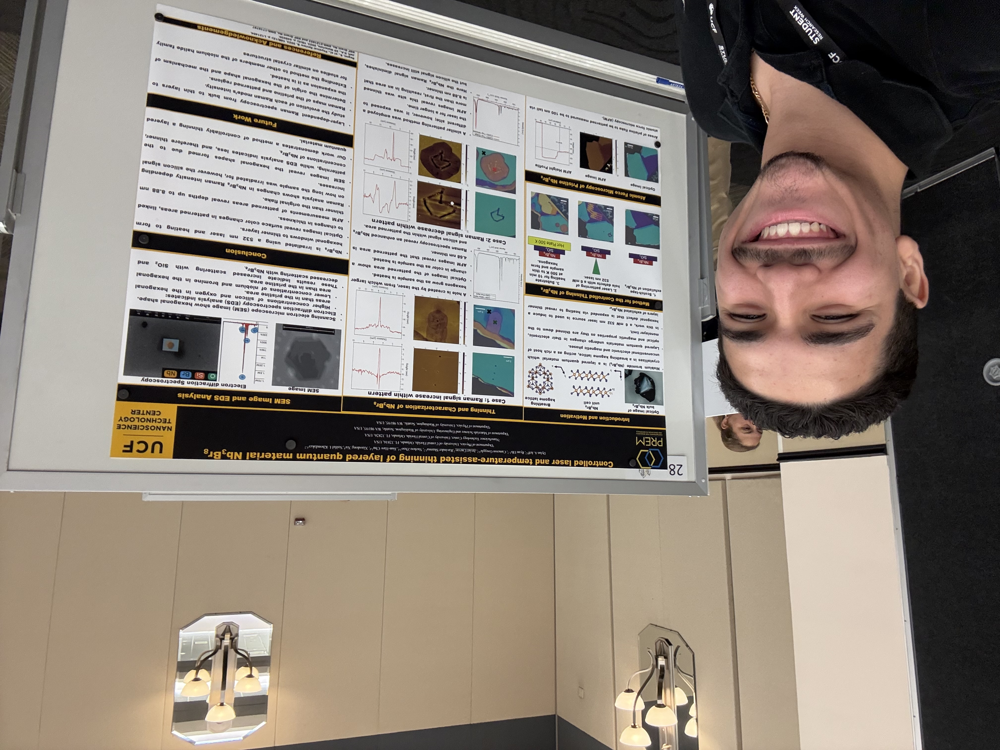
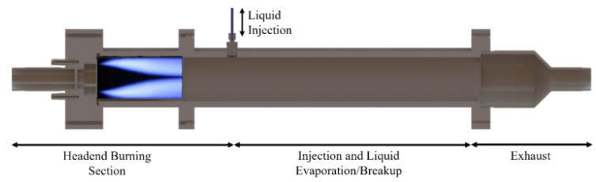
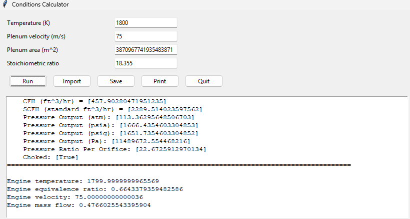

Javier A. Cuevas Chabrier
Mechanical Engineering & Computer Science Student @ the University of Central Florida
Research Experience
FSU Young Scholars Program
- Research under Professor Biwu Ma of the Biochemistry Department.
- Studied perovskites and their applications to Light Emitting Diodes (LEDs).
- Learned materials science and chemical engineering fundamentals.
- Used x-ray diffraction machines.
- Presented thesis to professors and graduate students.


Original Polyoculus Assembly (OPA)
- Research under Professor Eikenberry of the CREOL Department at UCF.
- Astrophysics/Optics and Photonics Department.
- Developing telescoping assembly.
- Designed the roof for the OPA telescoping assembly and assisted in developing the supporting structure for the roof when deployed outside the enclosure.


Astrodynamics, Space, and Robotics Lab (ASRL)
- Research under Professor Elgohary of the Aerospace Engineering Department at UCF.
- Studying orbital path efficiency using ROSS.
- Assisted in the drawings for an in-house and a commercial housing for electronics.

Nanophysics and Nanoelectronics Group
- Worked under Professor Khondaker of the Physcis Department at UCF.
- Studying quantum materials and making quantum devices.
- Grew monolayer molybdenum disulfide using Chemical Vapor Deposition (CVD) methods.
- Built a transfer stage to transfer nanomaterials to new substrates using cartridge heaters and polymers (PC and PDMS).
- Used PID temperature controller to set the temperature of cartridge heaters for transfer stage.
- Presented poster boards on thinning nanomaterials and bulk transfer of CVD grown molybdenum disulfide.
- Working towards implementing machine learning (ML) scripts in Python to predict height profiles of nanomaterials given their images.

Propulsion and Energy Research Lab (PERL)
- Research under Professor Kareem Ahmed of the Aerospace Engineering Department at UCF.
- Working in the Axial Stage Combustion Chamber Project and focused on calculating the necessary conditions for the facility to run.
- Studying flashback phenomena of hydrogen fuel in the axial stage.
- Assisted in the implementation of measurement software to get accurate data and validate design calculations.
- Developing scripts for calculating emissions with respect to residence time using Cantera library.
- Built Python-based condition calculator that calculates necessary facility conditions to achieve choked conditions and desired requirements such as engine temperature, velocity, and momentum flux ratio.
- Assisted in the manufacturing and assembly of two major projects (Axial Stage Combustion Chamber, CMC), leading to faster production and testing.

